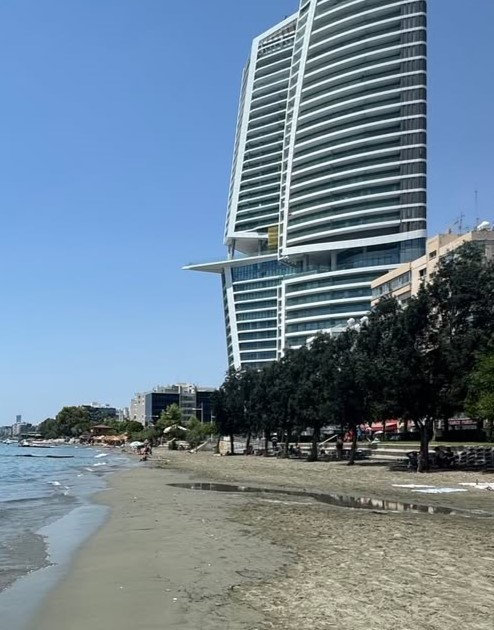
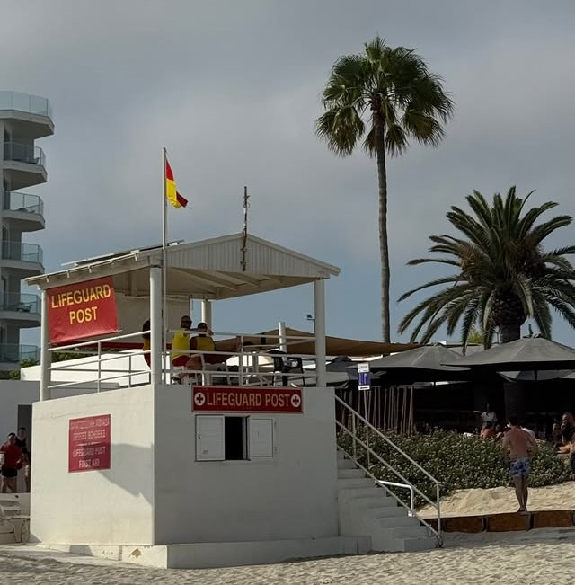
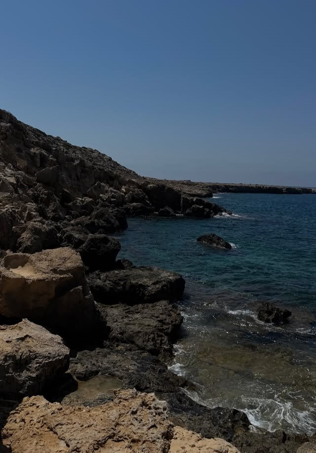
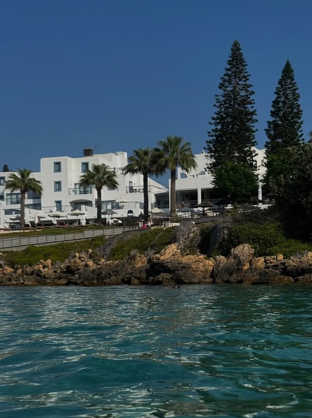
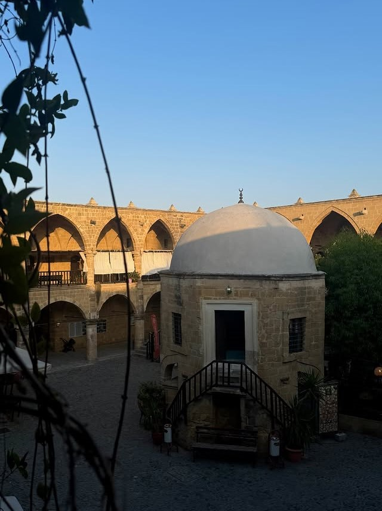
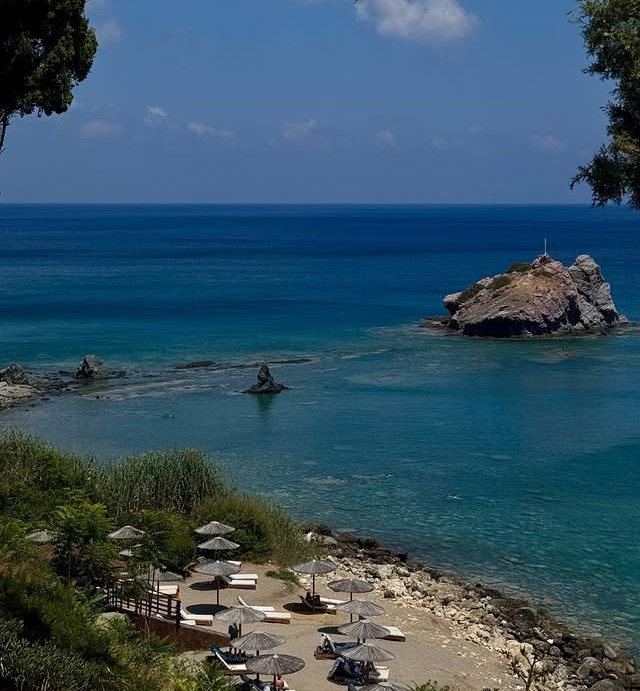
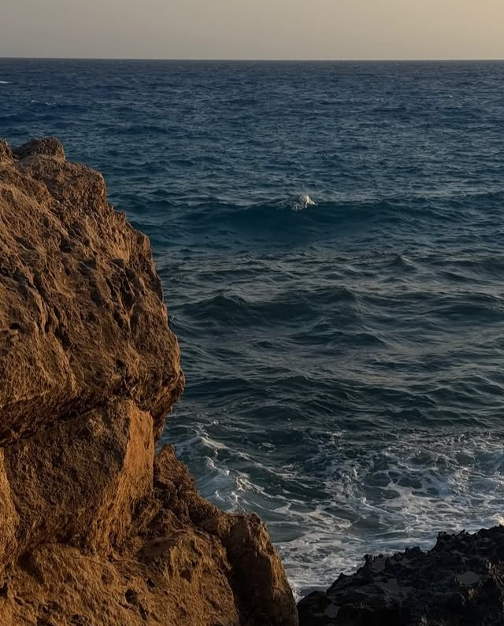

Cipro: Nicosia, Limassol, Ayia Napa e Pafos
Un viaggio di 7 giorni tra spiagge, mare cristallino e città storiche
Panoramica dell'Itinerario
Questo itinerario di 7 giorni ti porterà alla scoperta delle meraviglie di Cipro, tra spiagge, mare cristallino, siti storici e città pittoresche. Visiterai Limassol, Ayia Napa, Pafos e Nicosia, con escursioni a Cape Greco, Blue Lagoon e Aphrodite's Rock, godendo di relax, trekking leggero e passeggiate serali nel centro storico delle città principali.
Itinerario Giorno per Giorno
Arrivo a Limassol

Attività:
- Mattina: Arrivo all'aeroporto di Paphos e ritiro dell'auto a noleggio direttamente in aeroporto. A Cipro si guida a sinistra, ma ci si abitua molto velocemente. Le auto a noleggio hanno targhe rosse, quindi gli abitanti del posto riconoscono subito i turisti e tendono a guidare con maggiore prudenza. Se non sei abituato, come nel mio caso, può essere utile scegliere un'auto con cambio automatico.
- Pomeriggio: Guida verso Limassol lungo la costa sud dell'isola. Dopo l'arrivo, sistemazione in hotel e prima passeggiata sul lungomare della città. La zona del Molos è molto piacevole per camminare vicino al mare e offre una bella vista sui moderni grattacieli e hotel che caratterizzano lo skyline della città.
- Sera: Cena sul lungomare con cucina greca o cipriota. In molti ristoranti si trovano piatti semplici e tipici come souvlaki, pita e halloumi. I prezzi dei ristoranti variano generalmente tra circa 7-8€ per pasti veloci fino a 20-25€ a persona nei ristoranti più turistici.
Spiagge di Limassol e Ayia Napa

Attività:
- Mattina: Relax sulla spiaggia di Akti Olympion a Limassol. La spiaggia è facilmente accessibile e offre parcheggi nelle vicinanze. Qui è possibile fare una passeggiata sul lungomare oppure fare il bagno. Nelle spiagge attrezzate di Cipro il prezzo medio per due lettini e un ombrellone è circa 7,5€.
- Pomeriggio: Guida verso Nissi Beach ad Ayia Napa, una delle spiagge più famose e turistiche di tutta Cipro. Nonostante la grande popolarità, trovare parcheggio non è stato difficile. L'acqua è molto limpida e la spiaggia è perfetta per passare qualche ora di relax e fare il bagno.
- Sera: Arrivo e check-in ad Ayia Napa. La città è famosa soprattutto per la vita notturna e per i locali frequentati da molti giovani. Passeggiata serale nel centro e cena in uno dei tanti ristoranti o bar della zona.
Sea Caves, Cape Greco e Blue Lagoon

Attività:
- Mattina: Visita alle Sea Caves nella zona di Cape Greco. Le scogliere e le grotte marine offrono panorami spettacolari e sono uno dei luoghi più fotografati della costa orientale dell'isola. Qui è possibile anche fare il bagno nelle acque cristalline.
- Pomeriggio: Trekking nel parco naturale di Cape Greco. Il percorso è di difficoltà media: non è particolarmente impegnativo, ma può risultare un po' scomodo se fatto con ciabatte. Dopo la passeggiata, relax e bagno alla Blue Lagoon, famosa per l'acqua limpida e i colori spettacolari.
- Sera: Rientro ad Ayia Napa e seconda notte in città.
Konnos Bay & Fig Tree Bay

Attività:
- Mattina: Visita alla spiaggia di Konnos Bay, una baia molto bella immersa nella natura. Il parcheggio si trova abbastanza vicino alla spiaggia e la discesa a piedi è breve e semplice.
- Pomeriggio: Relax a Fig Tree Bay, una delle spiagge più famose della zona di Protaras. È generalmente più tranquilla rispetto a Nissi Beach, anche se molti visitatori considerano Nissi leggermente più spettacolare.
- Sera: Rientro e notte ad Ayia Napa.
La capitale Nicosia

Attività:
- Mattina: Partenza per Nicosia, l'unica capitale al mondo ancora divisa tra due stati. Il viaggio in auto permette di attraversare l'entroterra dell'isola.
- Pomeriggio: Esplorazione del centro storico con passeggiata tra Ledra Street e il quartiere tradizionale di Laiki Geitonia. Da Ledra Street è possibile attraversare il confine a piedi verso la parte turca della città. Il passaggio è semplice ma viene richiesto il passaporto o documento di identità sia all'ingresso che all'uscita.
- Sera: Pernottamento nel centro storico di Nicosia, una città molto interessante dal punto di vista storico e culturale.
Coral Bay e Pafos

Attività:
- Mattina: Partenza in direzione Pafos, in particolare verso Coral Bay, una delle spiagge più famose nella zona. La baia è ampia, con sabbia dorata e acqua limpida, ed è meno caotica rispetto alle spiagge più turistiche della zona di Ayia Napa.
- Pomeriggio: Guida verso il centro di Pafos e check-in. La città ha un'atmosfera più tranquilla rispetto ad Ayia Napa ed è molto apprezzata da coppie e famiglie. Se hai tempo nel tardo pomeriggio, puoi fare una breve deviazione per vedere il relitto della nave Edro III, uno dei punti più fotografati della costa, particolarmente suggestivo al tramonto.
- Sera: Passeggiata nel centro e sul lungomare di Pafos con cena in uno dei ristoranti della zona.
Spiagge e ritorno

Attività:
- Mattina: Visita a Lara Beach, una spiaggia più selvaggia e naturale rispetto alle altre dell'isola. La strada per raggiungerla include alcuni tratti sterrati, quindi è consigliato guidare con attenzione.
- Pomeriggio: Escursione ad Aphrodite's Rock, uno dei luoghi simbolo di Cipro legato alla leggenda della nascita della dea Afrodite. Il punto panoramico è molto suggestivo e perfetto per scattare fotografie.
- Sera: Ritorno all'aeroporto di Paphos, riconsegna dell'auto a noleggio e volo di rientro.
Riepilogo Costi Stimati
*Costi esclusi: voli, assicurazione viaggio, spese personali
Consigli Pratici
Quando Andare
Maggio, Giugno e Settembre sono mesi ideali: il clima è piacevole e le spiagge meno affollate. Luglio e Agosto possono essere molto caldi e le località turistiche affollate.
Come Muoversi
L'isola si esplora comodamente con auto a noleggio, molto diffuse tra i turisti. La guida è a destra e, per chi non è abituato, può richiedere un po' di attenzione, soprattutto nelle rotatorie e nelle strade strette. Le auto a noleggio hanno la targa rossa, quindi gli abitanti sono generalmente prudenti e tolleranti nei confronti dei turisti alla guida.
Dove Alloggiare
Scegli alloggi vicino al centro città o alle spiagge principali per comodità e accesso ai ristoranti locali.
Cosa Assaggiare
La cucina cipriota è tipicamente greca, ma con alcune variazioni locali uniche. Prova piatti come halloumi, souvlaki, pita cipriota e dolci tradizionali come loukoumades.
Le spiaggie
Le spiagge di Cipro offrono esperienze diverse: alcune si raggiungono facilmente e hanno parcheggio vicino, ombrelloni e due lettini disponibili a 7,5€; altre sono più isolate, con strade sterrate e accesso all'acqua più impegnativo. Pianifica in base al tipo di relax che desideri e porta sempre acqua e scarpe comode per quelle più rocciose.